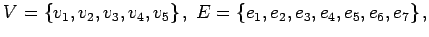
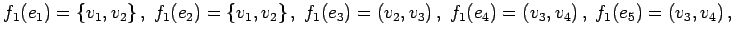
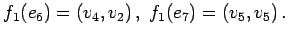
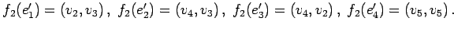
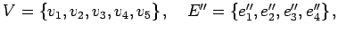
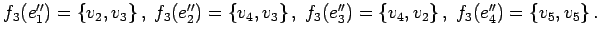

Inhalt Index DeskTop Bronstein

 Algebra und Diskrete Mathematik Algorithmen der Graphentheorie Grundbegriffe und Bezeichnungen
Algebra und Diskrete Mathematik Algorithmen der Graphentheorie Grundbegriffe und Bezeichnungen


Ein Graph G ist ein geordnetes Paar (V,E) aus einer Menge V von Knoten und einer Menge E von Kanten. Auf E ist eine Abbildung (Inzidenzfunktion) erklärt, die jedem Element von E eindeutig ein geordnetes oder ungeordnetes Paar (nicht notwendig verschiedener) Elemente von V zuordnet. Ist jedem Element von E ein ungeordnetes Paar zugeordnet, dann wird G ein ungerichteter Graph genannt (linke Abbildung).
Ist dagegen jedem Element von E ein geordnetes Paar zugeordnet, dann spricht man von einem gerichteten Graphen (rechte Abbildung). Die Elemente von E heißen dann auch Bögen oder gerichtete Kanten. Alle anderen Graphen werden gemischte Graphen genannt.
In der graphischen Darstellung erscheinen die Knoten der Graphen als Punkte, die gerichteten Kanten als Pfeile und die ungerichteten Kanten als ungerichtete Linien.
| Beispiel A |
|
Für den Graphen G in der Abbildung gilt:    |
| Beispiel B |
|
Für den Graphen G in der Abbildung gilt:  |
| Beispiel C |
|
Für den Graphen G in der Abbildung gilt:   |